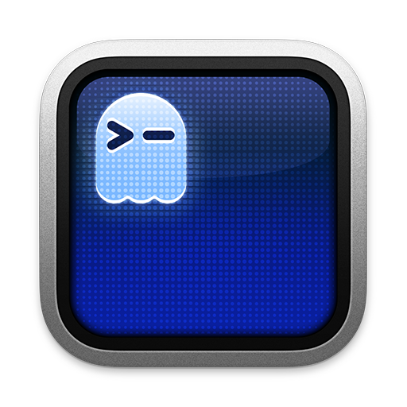
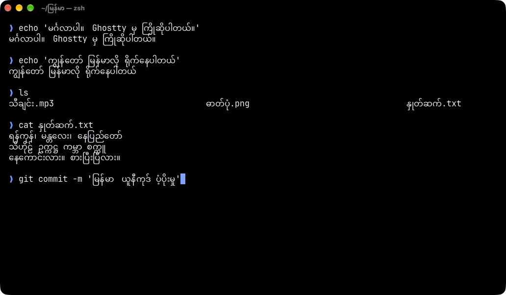

A fork of Ghostty that renders Myanmar (Burmese) Unicode text correctly, with stacked consonants, vowel signs, and medials.မြန်မာစာကို မှန်မှန်ကန်ကန် ပြသပေးသော Terminal
macOS 13+ · Apple silicon & Intel · 37 MB · Based on Ghostty